Girl Scout Name:
Girl Scout Badge: Night Owl
Girls must complete one activity from each of the 5 Steps of the badge.
1. Take a field trip to explore the night
December 9, 2021
My family and I went to the ABQ BioPark Botanical Garden to look at the River of Lights. There were a bunch of lights there, in all sorts of shapes and themes! For example, there was one section that had a bunch of hummingbirds and butterflies, and another that had a farm theme. It also had several light animations. I really liked seeing all of the light displays. My favorite one was the giant dinosaur.
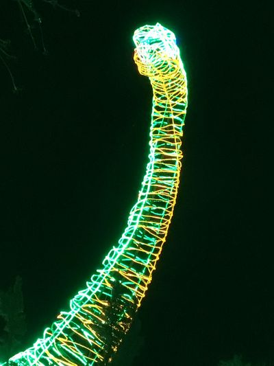 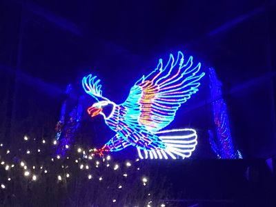 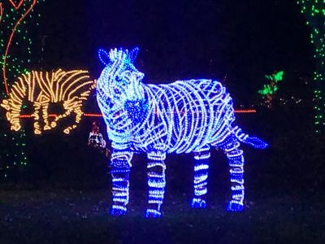 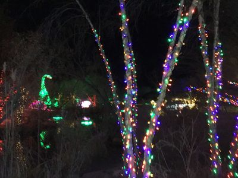 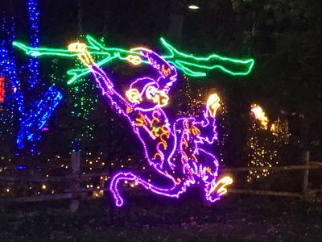 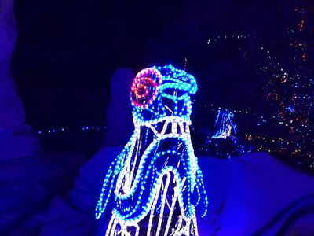2. Tour your world after dark
December 24, 2021
I went to see the farolitos in Old Town on Christmas Eve.Farolitos (also called lumenarias) are candles in paper bags weighed down with sand that are placed outside close to Christmas. Farolitos are part of the hispanic tradition Las Posadas. The word posada means inn. Farolitos are placed in the hope that the lights will lead the spirit of Christ to one's home. Read the Wikipedia article on farolitos for more information.
In Old Town, there were farolitos everywhere! There were lots on rooftops, along the sidewalk, and on walls. There was also a giant purple christmas tree and Mexican paper flags.
There were SO MANY people outside to see the farolitos. It made me a little nervous because of Covid, but most of them were wearing masks. The one thing that made me really nervous was seeing a bunch of people get into a crowded pavillion and sing Christmas carols without masks on. Besides all the nervousness about Covid, seeing the farolitos was really interesting. A parade of decked-out motorcycles came through Old Town, and behind it was a really long line of tour buses. I even saw some people riding bikes covered with christmas lights.
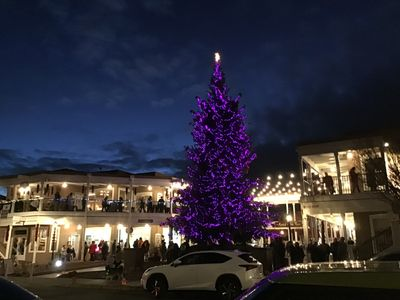 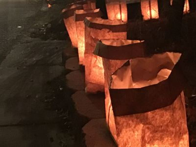 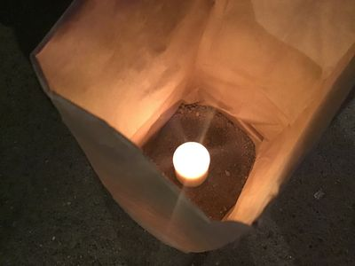 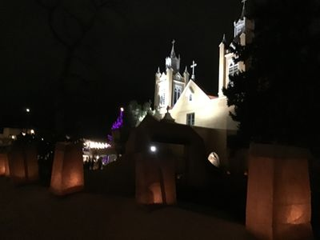 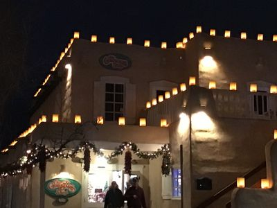 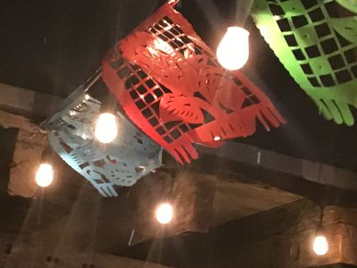
3. Meet people who work night hours
January 27, 2022
I interviewed Aidan, who works night hours at a private security company.The responses to the questions have been paraphrased below.
Do any of your friends or family also work night hours? If so, who?
Some of my friends work nights, and they work for the same company that I do. None of my family works nights.
What do you do at your job? How does working at night seem different than working during the day?
Most of the time criminals are more active at night than during the day. In my line of work, nights are busier than days. In my previous jobs, I worked nights too.
When do you start work and when do you end it?
Normally there are different shifts. For my type of job, we work pretty much any hours. Most of the time, it is from 7:00 pm to 7:00 am, or 8:00pm to 8:00 am. We can work any hours, though. It depends on what our clients need us to do.
Why do you work night hours, exactly?
I prefer nights. I'm more of a night owl, I can't get up very early. I also feel that I'm helping more at night because criminals usually do things at night.
For me, I feel better working at night and also feel like I'm helping people more.
4. Explore nature at night
December 8, 2021 - December 15, 2021
On December 8, I looked for Comet Leonard in the very early morning. I couldn't find it, but I did find Arcturus and where the comet was supposed to be. It was super hard to even find where it was supposed to be! When I looked there I couldn't see the comet. In the USA today article I read about it, it says anyone in the world can see it with some binoculars or a telescope. One of the problems might have been all of the utility wires blocking the sky. It was also close to sunrise, so it may have been really dim. Even though I didn't get to see the comet, it was still really fun to get up early and go stargazing! After looking for the comet, I watched a video on CNN that says the difference between comets, meteors, meteorites, and asteroids. Here's what I learned:
- Comets are pieces of frozen gas with dust and rocks in them.
- Asteroids are rocks, with hard surfaces. They come from the asteroid belt.
- Meteors are asteroids that hit the earth's atmosphere and burn up.
- Meteorites are asteroids that hit the earth. The ones that don't are called shooting stars.
KRQE ~ Newly discovered Comet Leonard to fly by Earth in once-in-a-lifetime event: Here’s how to see it
Space.com ~ Comet Leonard, the brightest of the year, is fading and acting strange
CNN ~ Look up to see bright Comet Leonard this month before it vanishes forever
USA Today ~ The brightest comet of the year, Leonard, is approaching Earth. Here's how to see it.
5. Host an Extreme Nighttime Party
December 21, 2021
I hosted a party for my family on December 21 without using electricity for light.
Before the party, I made lanterns and a popcorn popper out of soda cans and prepared chex mix. The activities I planned were:
- playing a board game
- popping popcorn (with the soda can popcorn popper)
- do a science experiment with candles
The Lanterns
We made three different types of lanterns. The popcorn popper is in the second image.
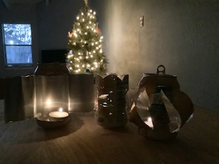 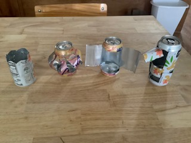
The Science Experiment
We made a candle seesaw out of plastic straws, candles, a cup, and some paperclips. When you light both of the candles, the straw is supposed to swing back and forth like a seesaw. It does this because when a candle drips, it weighs less, so the heavier candle on the other side falls to the bottom. Ours did that for a little while - and then the straws started to melt and turned into a big, hot, plasticky heap.
Go here to try making a candle seesaw.
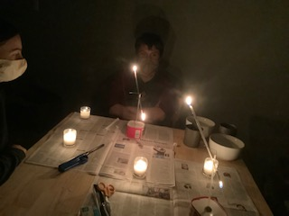
I chose this badge because...
I really like to stay up late (reading) and I thought it would be cool to do some things at night, so this badge seemed fun.
My favority activity was...
I really liked going to the ABQ Botanical Garden to see the Christmas lights (even though there were lots of people there).
This badge taught me about...
I learned how to interview people (I've never done that before), how hard stargazing is, what it's like to work at night, and about local culture.
The activities for this badge fit under these parts of the Girl Scout Law...
- respect myself and others: I was respectful to others by wearing a mask at the ABQ Botanic Garden and Old Town
- respect authority: I interviewed a security guard
- responsible for what I say and do: I was responsible for the planning of the Extreme Nighttime Party.
- use resources wisely: I had to keep my family entertained with limited resources during the Extreme Nighttime Party.